8 Finding Literature
The thesis is a comprehensive, individual research report that addresses and ultimately answers a research question that you develop. You can think of the seminar portion of the BAP as the tree trunk of your BAP in that it will provide you you with a broad overview of important theories and ideas relevant for a project focused on understanding public opinion. However, you will need to supplement this research (i.e., branch out) by finding additional research to deepen this knowledge and to find work that is more specifically focused on the topic of your thesis.
This guide provides some considerations concerning how to go about this process and, in so doing, discusses two tools that may help you along the way: Google Scholar and Connected Papers.
My opinions here are my own, but are inspired by experiences as a researcher and instructor in this course as well as this fine blog post by the political scientist Steven V. Miller, which I also recommend reading.
8.1 Strategies for Finding New Sources
If the substantive seminar is a tree trunk of knowledge on which you need to build, then that just raises the question of how you should go about doing that. Here, I’ll discuss three strategies for gathering new sources of research for potential inclusion in your thesis. These strategies should not be thought of as exclusive to one another. Rather, each might be useful at different points in the research process and can be used profitably together.
8.1.1 Open Search
First, one could begin with a somewhat open-ended search. This is what Miller talks about as “to [just] ‘Google it’”. (I discuss Google Scholar as a research tool below.)
Suppose that you are interested in understanding public opinion about reactions to terrorist attacks, perhaps guided by a nascent question such as “do terrorist attacks lead people to support their national government more”. One could go to the university library’s website (or, per below, Google Scholar) and enter in a keyword related to that topic (“terrorism”, “terrorist attacks”, etc.) and see what comes up.
This can be especially useful at the very beginning of your research endeavors when you’re just trying to get a sense of what might be out there. However, it may pose a problem of surplus - that is, you are very likely to find LOTS AND LOTS of things come up that may not be especially well tailored to your particular interests. That surplus can, paradoxically, be a negative for you at the beginning of the search process since you may feel like you’ve been thrown into the middle of an ocean without knowing which way to swim.
For instance, here are the first several entries I found on Google Scholar when using the phrase “terrorist attacks” as my search term:
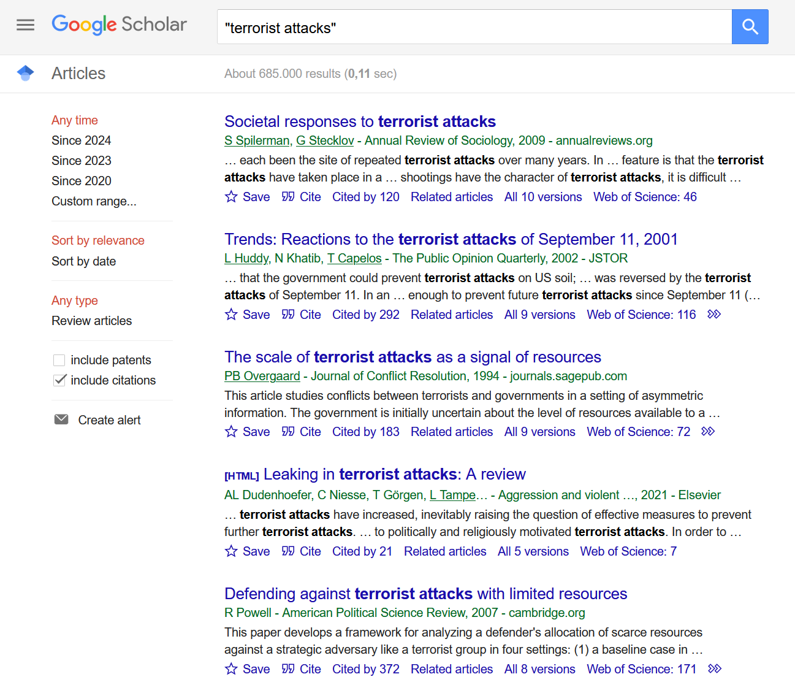
The second article by Leonie Huddy seems a relevant, albeit now somewhat old, resource. Huddy is a prominent public opinion researcher and the article clearly concerns public opinion on the subject.1 However, the other articles (save maybe the first one) look less relevant to my original question.
1 This article is actually a specific type of research article that is published by the journal Public Opinion Quarterly, in which the authors canvass existing survey data to give a descriptive view of public polling concerning a topic.
One thing I could do to better my odds of finding relevant work is to refine my search in various ways (choosing a different term, adding more keywords, asking for results from particular journals, etc.). Indeed, I would recommend doing just that if and when you engage in this type of research strategy: start with a keyword but limit your search to selected journals relevant to our class (see Section 8.3 below). For instance, here I add “public opinion” to my query to try and weed out less relevant work and restrict my attention to the American Political Science Review:
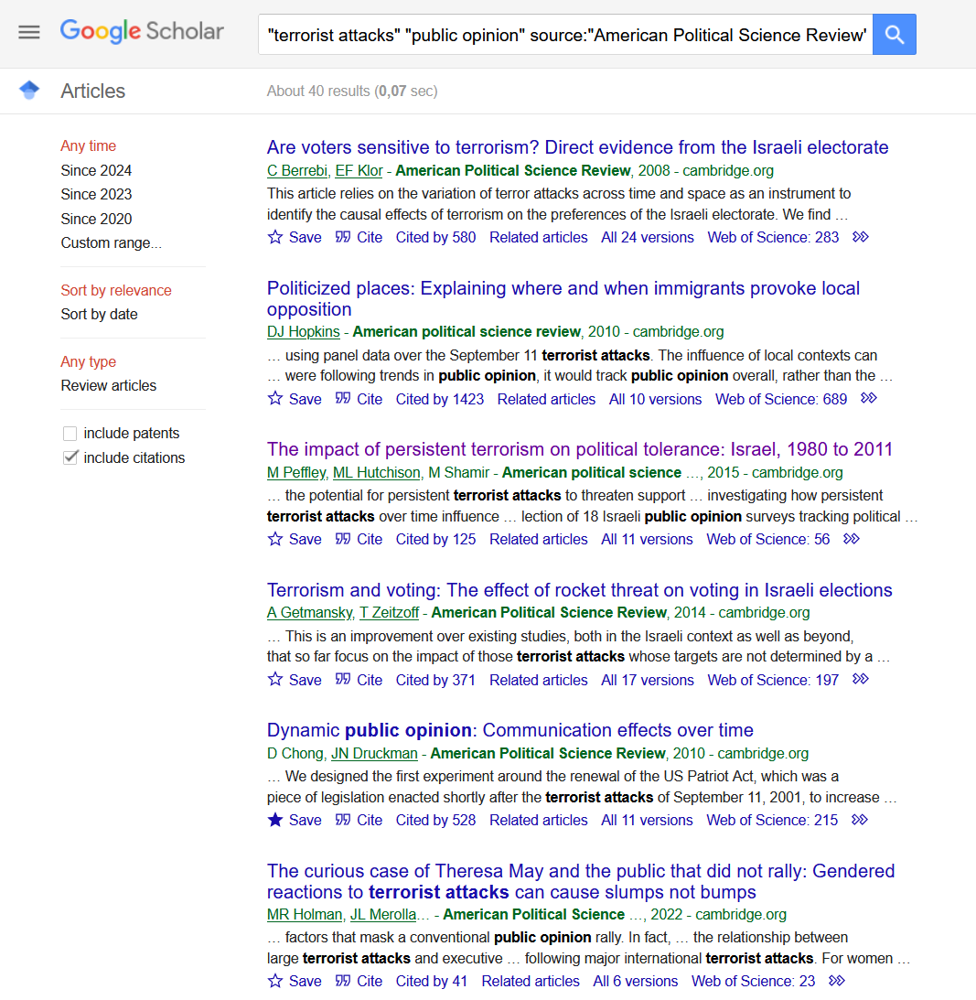
These results are much more helpful. I get a couple of articles not on the subject of terrorism (Hopkins, Chong and Druckman), but which may still be relevant for thinking about its effects in some way as they focus on how messages in the media influence public opinion. The other articles in this snapshot are much more directly focused on research relevant to my starting question.
An open search of this type can turn up relevant work and, indeed, quite a lot of it if you’re focused on a ‘hot’ topic. Of course, this strategy has its limitations. An open-ended search is a quite iterative process that may take some work to get you where you want to go (e.g., finding the right keywords, or searching through multiple relevant journals). It may thus be better at the very beginning (to get started) and towards the end (to see if you’re missing anything) strategy.
8.1.2 Working Backwards, Working Forwards
There are two other, more directed, strategies that one might choose here.2 In both cases one would start with an existing piece of research (a journal article, a book, a book chapter) that one finds interesting and on whose topic one might wish to work for the thesis. From this article one could work backwards: start with the reading, look at what it cites (i.e., its references), and then start reading what looks interesting/relevant. An alternative strategy is to work forwards: start with the reading, look at what cites it, and then start reading what looks interesting/relevant.
2 Or in combination with an open search strategy. Perhaps you begin with an open search, find an article or two that seem interesting/relevant and then branch out from there.
Both strategies speak to the potential problem of relevance noted above by using the judgment of established researchers (those that published the original article in the first case, those publishing subsequent research in the latter) to narrow down the teeming mass of published research into a list of studies that are likely to be relevant to the topic you are interested in. As we’ll discuss in the substantive seminar, relying on the advice or actions of those we trust can sometimes be a sound route to effective decision making.
Both of these strategies are sound methods for getting into the research literature on a particular topic. However, there are some issues to think about.
First, the backwards strategy could bias your literature review toward old (and potentially less relevant) research if your starting point is itself somewhat older. For instance, if you pick an article on reactions to terrorist events that was published in, say, 1985 then the research it is citing will likely involve cases that may be less relevant for understanding public reactions to more recent events. And, of course, it may lead you to ignore more recent theoretical and empirical advances on the topic. This need always be the case, but it is a potential risk; see Miller’s’s discussion on focusing research on relatively newer research.
Second, it says nothing about either the mechanics of actually going out and finding this literature or about how to sift through the likely large array of resources either strategy will produce. The next two sections consider these topics.
8.2 Two Useful Tools
8.2.1 Google Scholar
Google Scholar is a search engine for academic research (you may already have some familiarity with it from your other classes). You can search for a keyword (“immigration”, “populism”, etc.) as well as for particular articles and books. It is thus a powerful tool for all three strategies above. You can then access these materials either directly (in some cases researchers make a copy available) or via the Leiden University library. See below for information on how to set up Google Scholar with access to the library.
When you look up an article you will see something like the image below (staying with the terrorism example, but dropping the specific focus on the American Political Science Review):
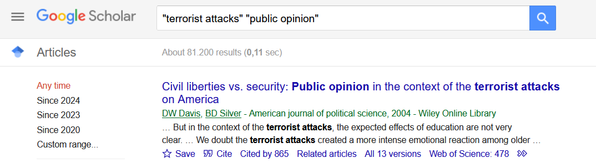
The first entry that comes up is an article by Davis and Silver that focuses on public opinion concerning the trade off between civil liberties and security introduced by new public policy passed into law after the September 11 terrorist attacks in the United States. There are two particularly relevant links here that I want to draw your attention to: “Related Articles” and “Cited by”.
Related articles is a list of articles Google has decided are related to this one. This may be a first way to delve into a topic in greater detail. In practice, you are relying on Google’s algorithm to sort articles into more/less relevant…which may work fine in most cases. Indeed, in this case, Google lists a variety of other articles on this particular topic that all strike me as highly relevant for someone doing research on public opinion concerning terrorist attacks (albeit work with a decidedly US skew), as this snippet shows:
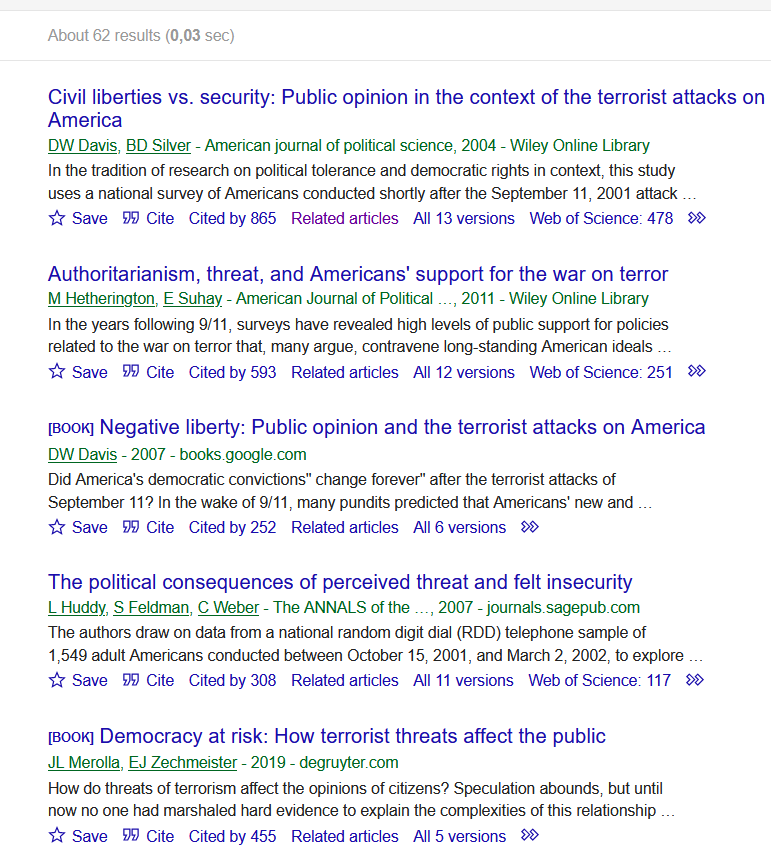
Alternatively, one can click on “Cited by”, which will naturally take you to a list of books and articles that cite the original research. Here, is a snippet of that screen for this article:
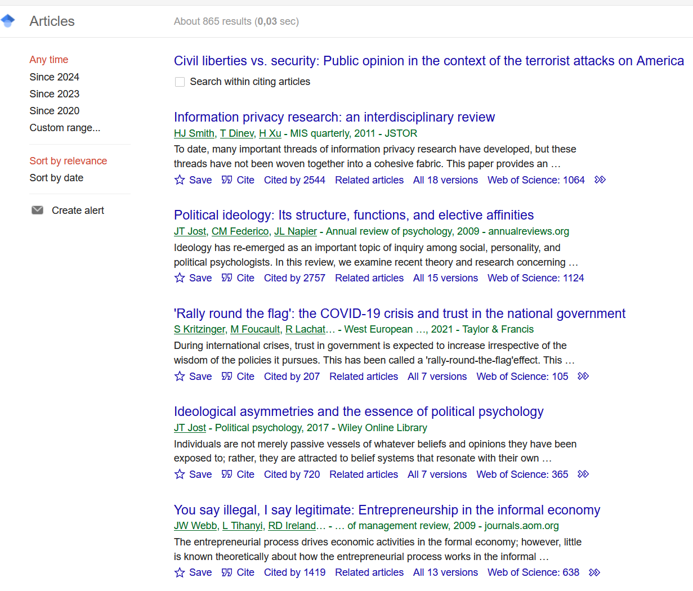
“Cited by” is a powerful method for researching “forward”. However, it may also pose some issues when starting with highly cited articles such as this one: lots of people cite it even when not working on terrorism! One can, of course, simply start skimming titles to find the relevant stuff, but that can be a bit time consuming if the originating article in question has a lot of citations.
Google Scholar has an additional trick up its sleeve that may help here owing to the fact that this is Google we’re talking about: search. As the left hand column in the image shows, one can restrict this list of citations to a particular date range to help manage a potential excess of resources. In addition, if you click on the “Search within citing articles” box, then you can perform a second search on this list of articles using keywords that may be more relevant for your interests, e.g., by searching for particular countries, topics, etc. Perhaps I am particularly interested in the case of Germany; I might then click that box, add Germany to the search bar, and see what comes up:3
3 I also added “public opinion” to further refine the search. Of course, I could have added something even more specific here depending on my interests, e.g., “tolerance”, or “prejudice”, or “voter turnout” or whatever.
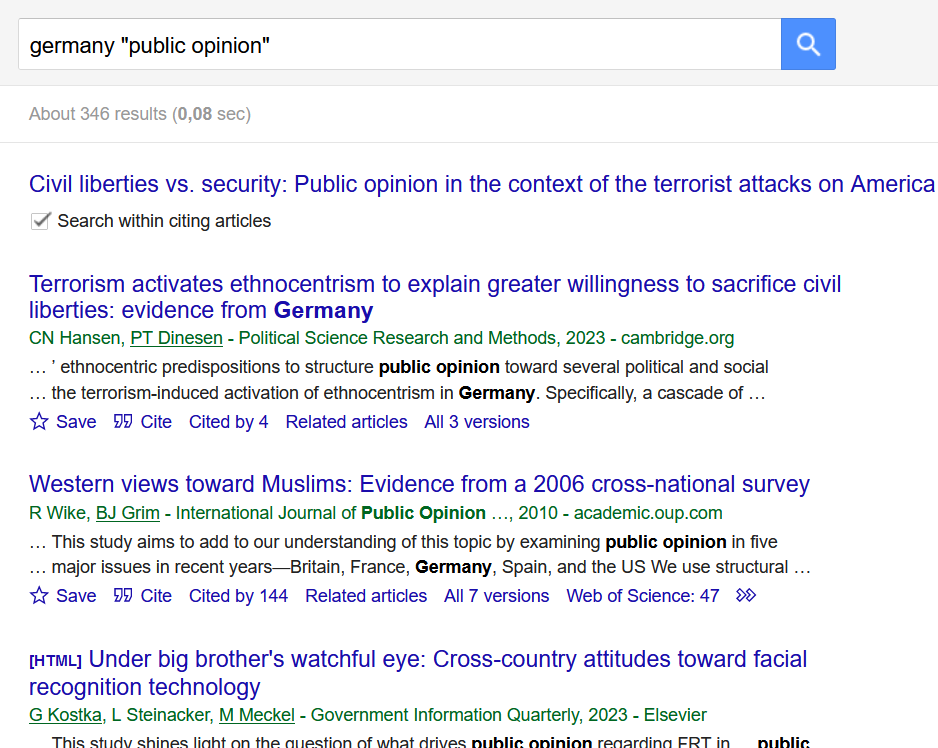
Now I have a little bit more to work with. I have the original article and some leads on research that may be more relevant for my own research (assuming, here, that I may want to understand something about German public opinion in particular).
8.2.1.1 Connecting Google Schlar to Leiden University’s Library Resources
One can use Google Scholar to not just find research materials but also to access them. There are two ways to do this. First, journals and researchers may provide links to the materials themselves. For instance, in the most recent image, the link “[PDF] sagepub.com” would bring me to the pdf of the article provided by the journal that published the research in question. Researchers themselves may also provide links to articles hosted on their own websites, although note that sometimes these are ‘pre-print’ editions (i.e., versions that were submitted for publication and which might not exactly match the final published version). It should go without saying, though, that you should be careful when clicking on random-looking links on the web!
The second route is via Leiden University itself. You may have noticed in the images above the “GetIt@Leiden” option. Clicking on that link will take you to Leiden University’s library page for the article/resource in question and, from there you can access the material.
To take this second route you must first add the university as a resource in the settings in Google Scholar. First, access the website’s settings page via three horizontal lines in the upper top-left corner of the website. Then go to “Library Links”, search for “Leiden” in the search box, click on Leiden and select the box for “Universiteit Leiden”. Hit save and then everything should be good to go.
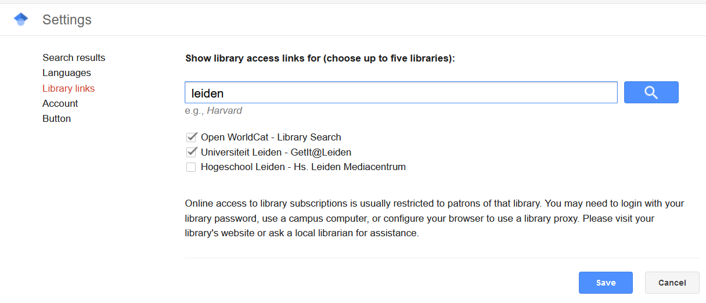
8.2.2 Connected Papers
[Note: I originally prepared this information prior to the Fall 2021 version of the BAP. Since then Connected Papers has added an account system. One can create two of the graphs discussed below without an account per month and five per month with a free account. It appears that one can largely bypass these limitations via the use of alternative web browsers and/or private/incognito modes, although I’m not sure if all functionalities will be offered without an account. This may limit the tool’s usefulness for you somewhat, but I still think it’s a cool resource that could be used sparingly to flesh out your research efforts.]
Google Scholar, much like Google itself, is an ocean of information. It may be somewhat difficult to find what you want as a result. One new resource that may help with this is Connected Papers.
Much like Google Scholar, you can search for a given article (using its title or its digital object identifier (DOI)). What Connected Papers then does is search through articles to try and identify those that are on the same topic based on similarity in each article’s references. The logic is that two articles that cite the same things will likely be on the same topic.
Let’s check out the Davis and Silver paper that we turned up in the section above. This is as easy as typing in the name and then double clicking on the article.
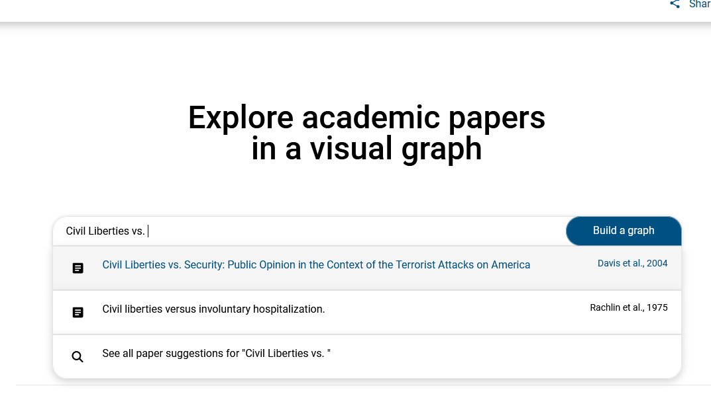
Here is what the output page looks like. You can double click on this image to zoom in on it. The graph can be directly accessed via this link.
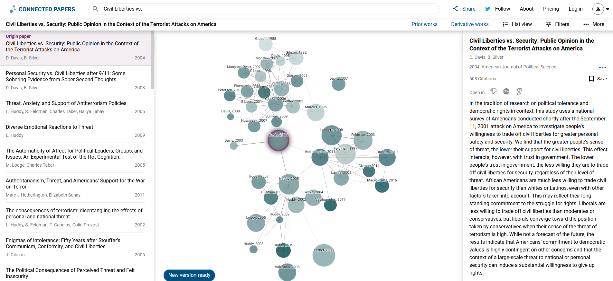
The middle part provides a graphical display of research in the form of a network. Here is how to read the graph:
- Each circle represents a different piece of research with our starting article seen in the middle or so of the graph. The size of the circle is related to how many times the piece of research has been cited: larger circle = more highly cited.
- The shading of the graphs indicates when the research was published - darker shaded articles were published more recently.
- The circles are connected by lines. The proximity of the circles to one another indicates the similarity in the paper’s citations and, presumably, topical focus.
There look to be three or so clusters of studies centered around Davis and Silver 2004 (our starting paper). The papers to the north of it focus on attitudes regarding political tolerance and civil liberties. The papers very very close to it (Sullivan 2009, Hutchison 2007) are focused specifically on the relationship between civil conflict/terrorism and tolerance, while those further north are about tolerance more generally. The other two clusters focus on the concepts of authoritarianism (the cluster to the right with Lubbers 2008 in it) while the cluster to the bottom focuses on terrorism and threat; these are both concepts that come up in Davis and Silver. Not only has Connected Papers given me some potential sources to look into on the very specific topic I began with (terrorism and civil liberties) but it has also given me a path toward exploring related concepts and ideas that I might need to make reference to in building up my ideas about this topic. It is also pretty easy to investigate those papers; as the right-hand part of the figure shows, for instance, I can obtain the abstract for the paper, and Google Scholar links, by clicking on the circle for the paper in question.
Connected Papers also provides two additional areas: “Prior Works” and “Derivative Works”. The former tab provides an overview of the works that are highly cited by works displayed in the graph and which might thus be counted as “seminal works” within this field.
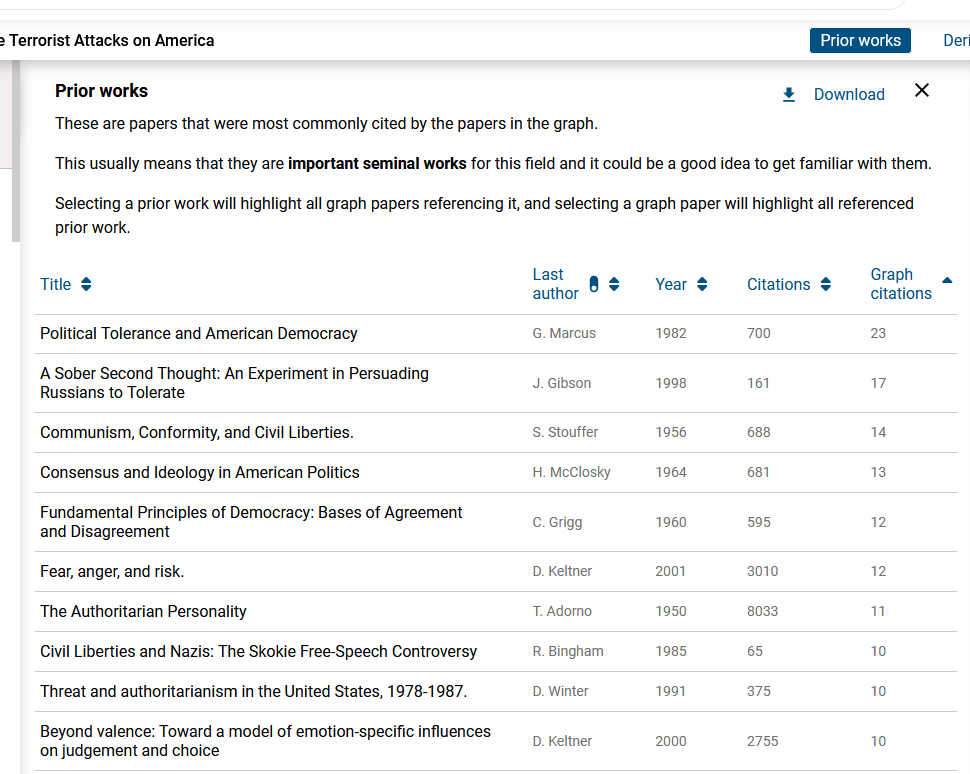
We also have Derivative Works: papers not in the graph but which cite many of those that are.
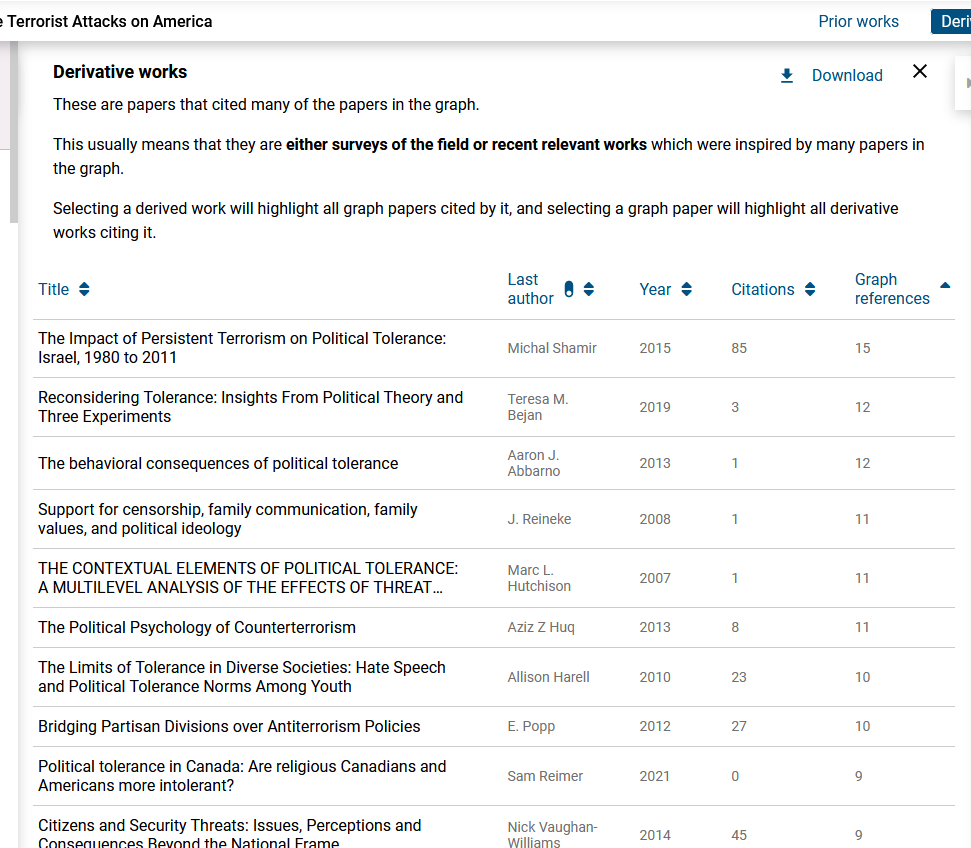
The nice thing about Connected Papers, in my opinion, is that it can reveal to you in one go a big (but manageable) chunk of a broader research literature. If I were writing a paper on terrorism and civil liberties (or, perhaps, one of those component concepts), for instance, most of the articles represented in the image with the graph above would indeed be the core of my literature review as they represent some of the most important work on this topic over the past two decades. I would not want to stop with them, but they would nevertheless provide me with a solid core with which to work. That might not be the case in other examples, of course. In this example I chose a highly influential article, for instance. Nevertheless, Connected Papers can help one get into a research literature on a topic quite quickly.
8.3 Okay…but what should I focus on?
Okay, so you’ve begun researching via one of the methods above. In doing so, you have likely turned up a large or large-ish number of things to read. How do you pick what to read and focus on? There is likely no “right” answer here, but let’s talk about some strategies.
First, one could try and read everything you have found. This would certainly give you a deep knowledge of the literature. However, nobody can do that and certainly not someone working on your timeline. Thus, out of necessity, you will have to use some heuristics (a concept we’ll cover in the course) to try and cut through the noise, albeit with the risk of creating bias in your search.
One natural shortcut is algorithmic and has been the topic of the sections above: use Google or Connected Paper’s algorithm to identify a smaller subset of articles and then read through them. This isn’t a bad idea. However, we don’t necessarily know what goes into Google’s decision making in deciding what is relevant. In addition, one might still need to use judgement to parse out relevant and irrelevant resources as I did in the example above regarding Connected Papers.
A second cue you can use is prestige. This is a natural cue as humans use prestige all the time to decide whom to pay attention to and learn from. There are two relevant signals of prestige that one can look to here. First, one can look at citation counts. The Davis and Silver article from above, for instance, has been cited nearly 900 times, which is quite a bit for a single paper. That signals that many other researchers think this is an important article. This may create some potential biases though. The natural bias is temporal; recent articles will be cited less simply because they are more recent, so a citation based judgement rule may lead you away from important recent work. That bias, at least, can be rectified by going back to Google Scholar and looking for more recent work on the topic.
A second signal of prestige is the journal in which the article is published. The blog post by Miller linked to at the beginning of this document discusses this strategy in some more detail. Here are the journals I’d think to be quite relevant for our class (with acronyms in parentheses):
- General Interest Journals
- General interest journals are those that publish research from across the various sub-fields of political science. These are typically the most prestigious journals in the field.
- The Big Three: American Political Science Review (APSR), American Journal of Political Science (AJPS), and the Journal of Politics (JOP)
- Others of particular relevance: British Journal of Political Science (BJPS), Political Research Quarterly (PRQ), Perspectives on Politics
- Journals that focus more explicitly on public opinion, communication, and behavior
- Public Opinion Quarterly (POQ), Political Behavior, Political Psychology, Political Communication, Comparative Political Studies, Electoral Studies, Journal of Experimental Political Science, International Journal of Public Opinion Research
- Non-political science journals that may be relevant
- In Psychology: Journal of Personality and Social Psychology, Psychological Science
- In Communication Studies: Journal of Communication, Communication Studies
- In Sociology: American Journal of Sociology, American Sociological Review, Social Forces
- In Economics: American Economic Review
- “Super” general interest journals
- There has been some very interesting and important work published by political scientists in journals that cover “science” more generally (i.e., journals that also publish research in biology, physics, etc.). Hence, my calling them “super” general interest journals.
- Examples: Science, Proceedings of the National Academy of Science of the United States (PNAS), Nature: Human Behavior
The above should not be taken as meaning that journals not on this list are irrelevant or bad. Indeed, there are likely some not listed above that may be especially relevant for your research question. Nor should it be taken to mean that the research featured in the above journals is necessarily better or even good; that is a judgment that you have to make. Nevertheless, it isn’t a bad idea to focus your attention on work published in these journals first.